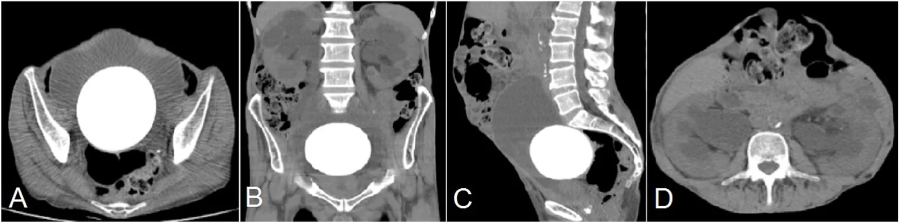
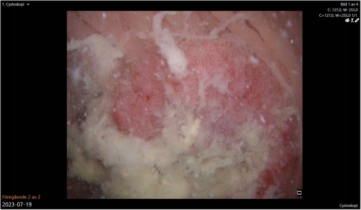
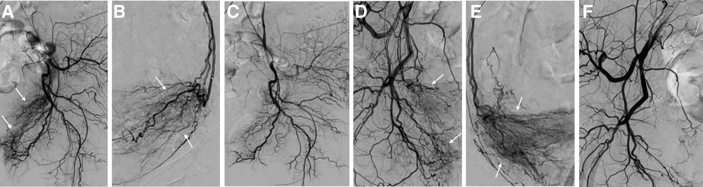

3058 — Xuất huyết từ mảnh ghép ruột/dạ dày sau tăng dung tích bàng quang ở trẻ / Bleeding from the enteric patch after augmentation cystoplasty
Tags: pattern:xuat-huyet pattern:dai-mau pattern:loet-manh-ghep pattern:soi pattern:u-mien-noi vung:tiet-nieu vung:bang-quang anatomy:bang-quang-thanh-kinh protocol:CT-cystogram protocol:CTA protocol:noi-soi-bang-quang protocol:DSA protocol:nut-mach
Mức chắc chắn (certainty): tổng hợp y văn (literature synthesis) — ghép ca hội chứng đái máu–khó tiểu sau tạo hình bàng quang bằng dạ dày (hematuria-dysuria syndrome, HDS) kèm tổng quan y văn (Urol Case Rep 2015, PMC4714289), hướng dẫn EAU-ESPU-ERN 2025 về spinal dysraphism (Eur Urol Open Sci 2026, PMC13136771), loạt 91 bể chứa dạ dày (Int Braz J Urol 2018, PMC6237526), loạt 22 trẻ tăng dung tích bàng quang (Sci Rep 2024, PMC10879155), ca sỏi bàng quang khổng lồ 610 g sau ileocystoplasty (2026, PMC13577874), ca ung thư biểu mô tuyến thứ phát trong bể chứa (2026, PMC13122120) và hai loạt nút mạch động mạch bàng quang chọn lọc (Cureus 2024, PMC11087881; Medicine 2026, PMC13632971). Không có ca do nhóm tự chụp.
Câu hỏi thực hành: bé gái 14 tuổi, bàng quang thần kinh do thoát vị tủy–màng tủy, đã tăng dung tích bàng quang bằng hồi trang + Mitrofanoff cách đây 6 năm, vào cấp cứu vì đái máu đỏ tươi ồ ạt trong 6 giờ, mạch 128, huyết áp 88/52 mmHg, Hb 6,8 g/dL; không sốt, không đau bụng. Câu hỏi: máu từ đâu — mảnh ghép ruột, sỏi cọ xát, hay mạch máu mạc treo — và chụp gì trước khi mổ? Bài chốt ba quyết định: (1) đái máu sau tăng dung tích bàng quang không phải "nhiễm trùng tiểu" cho tới khi soi bàng quang loại trừ loét mảnh ghép/sỏi/u; (2) đái máu ồ ạt kèm tụt huyết áp phải chụp CTA thì ĐỘNG MẠCH trước, vì nguồn chảy có thể là giả phình/AVM mạc treo mảnh ghép mà nội soi không thấy; (3) nút mạch chọn lọc là bước cầm máu ít xâm lấn hiệu quả, nhưng tổn thương loét/hoại tử mảnh ghép thì vẫn phải mổ. Nối 672 – Biến chứng muộn sau tái tạo bàng quang bằng ruột, 3009 – Dò bàng quang–ruột và dò bàng quang–da, 691 – Sỏi bàng quang & sỏi quanh catheter, 3010 – Hẹp miệng nối niệu quản–bàng quang.
1. Tổng quan bệnh học – cơ chế hình ảnh: vì sao mảnh ghép chảy máu
- Bốn nguồn chảy máu khác nhau về cơ chế, nên khác nhau về hình ảnh và cách xử trí: (a) loét do acid — chỉ có ở mảnh ghép dạ dày (gastrocystoplasty), gây hội chứng đái máu–khó tiểu (HDS); (b) loét/thiếu máu tại miệng nối — ở mảnh ghép hồi tràng/đại tràng, nơi mép khâu là vùng phân thủy mạch; (c) cọ xát do sỏi — sỏi hình thành trong bể chứa ruột vì chất nhầy ứ + vi khuẩn sinh urease; (d) mạch máu — giả phình/AVM của nhánh mạc treo mảnh ghép hoặc động mạch bàng quang, và ung thư biểu mô tuyến tại miệng nối xuất hiện sau hàng chục năm.
- Tần suất HDS (số liệu thật, không phải ước lượng): theo tiêu chuẩn Nguyen, HDS gồm co thắt bàng quang, đau trên xương mu/dương vật/niệu đạo, đái máu đại thể màu nâu cà phê KHÔNG có nhiễm trùng, loét da vùng đáy chậu, khó tiểu không nhiễm trùng. Tỷ lệ rất dao động: 24% (78 trẻ, theo dõi 8,1 năm, Plaire), 36% (57 trẻ mổ 1989–1992), 70% (23 bệnh nhân, theo dõi trung bình 45 tháng), và 18% (DeFoor 2003) (PMC4714289). Khoảng dao động này phản ánh tiêu chuẩn chẩn đoán khác nhau, không phải khác biệt chủng tộc.
- TẠI SAO acid gây đái máu: niêm mạc dạ dày trong bể chứa vẫn tiết HCl và vẫn đáp ứng gastrin; nước tiểu không đủ đệm nên pH lòng bể chứa giảm, acid ăn mòn niêm mạc chuyển tiếp của cổ bàng quang – niệu đạo và vùng miệng nối (không có hàng rào nhầy dạ dày) → viêm, loét, chảy máu mao mạch. Máu tiếp xúc acid → hemoglobin bị oxy hóa/chuyển màu → nước tiểu nâu cà phê, khác máu đỏ tươi của nguồn động mạch. Vì đau và co thắt do acid, HDS giảm dần theo thời gian ở đa số bệnh nhân nhưng có thể tái phát từng đợt.
- Điều trị HDS — bằng chứng cụ thể: 13% ca nhẹ, tự giới hạn, không cần điều trị; 6% dùng kháng H2 để kiểm soát triệu chứng nhẹ; 4% dùng kháng H2 liên tục; nhưng tới 70% bệnh nhân trong các loạt khác cần kháng H2 và/hoặc ức chế bơm proton (PMC4714289). Thuốc kháng muscarinic liều cao KHÔNG có lợi về niệu động học hay lâm sàng (29 bệnh nhân, Castellan) — đây là điểm hay bị làm sai vì triệu chứng giống bàng quang co thắt.
- TẠI SAO mảnh ghép ruột cũng chảy máu: đoạn ruột detubular hóa được khâu vào vòm bàng quang; bờ khâu là vùng phân thủy mạch giữa mạc treo ruột và thành bàng quang. Căng mạc treo, xoắn mảnh ghép, hẹp cuống mạch, thiếu máu mép khâu → loét thiếu máu → chảy máu mạn hoặc thủng. Đây là lý do cùng một vị trí vừa gây dò/thủng (bài 3009) vừa gây xuất huyết — hai mặt của một tổn thương thành.
- TẠI SAO sỏi là nguồn chảy máu phổ biến: bể chứa ruột tiết chất nhầy, không có lớp niêm mạc chống dính, ứ nước tiểu và vi khuẩn sinh urease → sỏi. Y văn ghi 10,5–52%, cohort 22 trẻ có 36,4% (PMC10879155). Sỏi lớn cọ xát niêm mạc khi CIC và gây đái máu đại thể từng đợt; ca sỏi 610 g sau ileocystoplasty 15 năm còn gây ứ nước–niệu quản hai bên và suy thận (PMC13577874) — tức sỏi không chỉ gây máu mà còn gây tắc.
- TẠI SAO phải nghĩ tới ung thư ở người đã tăng dung tích > 10 năm: nguy cơ 7–8 lần (mảnh ghép hồi tràng) và 14–15 lần (đại tràng/dạ dày), trung vị 19 năm sau mổ (PMC10879155). Hướng dẫn EAU-ESPU 2025 khuyến cáo theo dõi suốt đời bằng khám, siêu âm, chức năng thận, khí máu và vitamin B12, và nội soi có thể xem xét sau 10 năm dù chi phí–hiệu quả còn bàn cãi (PMC13136771). Vì vậy đái máu ở bệnh nhân > 10 năm sau tăng dung tích = phải soi và sinh thiết tổn thương, không được gọi là "viêm bàng quang".
- TẠI SAO CTA thì động mạch lại quyết định: giả phình/AVM chỉ hiện ở thì động mạch (25–35 giây) vì nó đổ đầy và rửa nhanh; ở thì tĩnh mạch–bài tiết, cản quang đã pha loãng nên ổ giả phình biến mất hoặc chỉ còn "ổ tăng đậm độ mờ". Ngược lại, sỏi thấy rõ trên thì không cản quang, còn u tại miệng nối thấy rõ ở thì tĩnh mạch cửa (ngấm thuốc mô mềm). Vì vậy protocol đúng là 3 thì: không cản quang → động mạch → tĩnh mạch cửa, không phải "CT bụng có cản quang".
2. Mẫu hình + chẩn đoán phân biệt theo NHỊP chảy máu và NGUỒN (Gamut)
- Theo nhịp chảy máu (quyết định thứ tự xử trí):
- Mạn/từng đợt, máu nâu cà phê, kèm đau–co thắt, không sốt → HDS (mảnh ghép dạ dày).
- Từng đợt, liên quan CIC, có sỏi trên phim cũ → sỏi cọ xát.
- Ồ ạt, đỏ tươi, tụt huyết áp, không đau → nguồn động mạch: giả phình/AVM mạc treo, loét ăn mòn mạch, u chảy máu.
- Rỉ rả kéo dài + thiếu máu + sụt cân + > 10 năm sau mổ → ung thư biểu mô tuyến tại miệng nối.
- Theo vị trí nguồn (quyết định đường can thiệp):
- Trong lòng bể chứa (niêm mạc mảnh ghép, cổ bàng quang): nội soi thấy và đốt/chiếu laser được.
- Thành/miệng nối (loét thiếu máu, u): nội soi + sinh thiết, xử trí bằng cắt mảnh ghép.
- Ngoài lòng bể chứa (mạc treo mảnh ghép, động mạch bàng quang): nội soi âm tính, phải CTA/DSA.
- Mnemonic "PATCH": Pseudoaneurysm/AVM (mạch máu), Acid — HDS (dạ dày), Tumour (ung thư tại miệng nối), Calculus (sỏi), Hemorrhage từ loét/thiếu máu mép khâu.
- Bẫy dịch tễ quan trọng: ở trẻ có bể chứa ruột, "nhiễm trùng tiểu" là chẩn đoán mặc định vì bacteriuria không triệu chứng gần như 100% (PMC10879155) — nên cấy nước tiểu dương không giải thích được đái máu đại thể, và không được dừng ở đó.
3. Bảng so sánh phân biệt (ma trận đối chiếu)
| Thực thể (entity) | Hình ảnh điển hình | Chốt vào (rule-in) | Chốt loại (rule-out) | Gợi ý xác nhận |
|---|---|---|---|---|
| HDS do mảnh ghép dạ dày | Nội soi: niêm mạc dạ dày đỏ, phù, loét nông ở mảnh ghép và cổ bàng quang; bể chứa thành mỏng, không khối | Mảnh ghép dạ dày + đau/co thắt + nước tiểu nâu cà phê không nhiễm trùng + đáp ứng kháng H2/PPI | Máu đỏ tươi ồ ạt, có giả phình trên CTA → không phải HDS | Nội soi + pH nước tiểu; thử PPI 2–4 tuần |
| Sỏi trong bể chứa | CT không cản quang: cấu trúc cản quang trong lòng bể chứa, có thể 610 g / 7×7×7 cm; ứ nước–niệu quản nếu sỏi bít cổ | Sỏi thấy trên CT + đái máu liên quan CIC + tiền sử sỏi | Không sỏi trên CT → tìm nguồn khác; sỏi nhỏ không loại trừ loét | CT không cản quang; soi bàng quang; tán sỏi |
| Loét thiếu máu tại miệng nối | Nội soi: ổ loét đơn độc đúng đường khâu, bờ trắng, có thể lộ mạch; CT: dày khu trú thành bể chứa, không khối | Loét đúng miệng nối + tiền sử tăng dung tích + đái máu tái phát | Loét lan tỏa toàn bể chứa → nghĩ HDS/viêm hơn là thiếu máu khu trú | Nội soi + sinh thiết bờ loét (loại u) |
| Giả phình/AVM mạch mạc treo hoặc động mạch bàng quang | CTA thì động mạch: ổ đậm độ bằng mạch máu, rửa song hành với động mạch; DSA: blush mạch đổ đầy thì động mạch, mất ở thì muộn | Đái máu ồ ạt + CTA/DSA thấy ổ mạch + nội soi không thấy nguồn trong lòng | Nội soi thấy máu rỉ từ niêm mạc, CTA âm tính → nguồn niêm mạc | CTA 3 thì → DSA + nút mạch chọn lọc |
| Ung thư biểu mô tuyến tại miệng nối | Nội soi: khối nhô/loét cứng tại miệng nối, dễ chảy máu khi chạm; CT: dày thành khu trú ± hạch | > 10 năm sau tăng dung tích + khối tại miệng nối + thiếu máu/sụt cân | Niêm mạc đều, không khối, sinh thiết âm → loét lành | Nội soi sinh thiết nhiều mảnh; CT bụng–chậu có cản quang |
| Viêm bàng quang xuất huyết do vi khuẩn | Thành bể chứa dày lan tỏa, niêm mạc sung huyết, không khối, không sỏi; cấy dương | Sốt + cấy dương + đái máu + thành dày lan tỏa | Bacteriuria không triệu chứng gần như 100% ở bể chứa ruột → cấy dương không chứng minh nguyên nhân | Cấy + nội soi loại trừ loét/u |
| Chảy máu do CIC chấn thương | Máu rỉ từ lỗ thông/cổ bàng quang, nội soi thấy vết xước niêm mạc, tự cầm | Chảy máu ngay sau đặt catheter + nội soi thấy vết xước + tự cầm < 24 giờ | Chảy máu ồ ạt, Hb giảm nhanh, không tự cầm → không phải chấn thương CIC | Theo dõi Hb; nội soi nếu kéo dài |

Bệnh nhân 15 năm sau ileocystoplasty, vào viện vì suy thận và đái máu. (A) trục ngang: sỏi khổng lồ chiếm gần toàn bộ lòng bể chứa (cấu trúc cản quang tròn, đậm độ cao); (B) vành; (C) đứng: sỏi 610 g, kích thước 7×7×7 cm sau khi lấy; (D) trục ngang thận: ứ nước–niệu quản hai bên. Bài học: sỏi không chỉ gây máu mà còn gây tắc và suy thận, và đái máu ở bể chứa ruột phải chụp CT không cản quang để tìm sỏi trước khi soi. Nguồn: 2026 (PMC13577874), CC BY 4.0, nguyên bản.4. Protocol chụp + phân tầng xử trí
- Bước 0 — hồi sức song song với chẩn đoán: đặt 2 đường truyền lớn, truyền hồng cầu khối (mục tiêu Hb 7–8 g/dL ở trẻ ổn định, 8–10 g/dL nếu đang chảy), bù đông máu theo xét nghiệm, bàng quang rửa liên tục bằng dung dịch muối ấm để tránh cục máu đông bít lỗ thông. Không đặt catheter cứng qua niệu đạo ở trẻ có bể chứa + cổ bàng quang đã tái tạo — dùng lỗ thông Mitrofanoff.
- Bước 1 — nội soi bàng quang (cystoscopy) là bắt buộc, làm sớm: mục tiêu khu trú nguồn (mảnh ghép? miệng nối? cổ bàng quang?), hút cục máu, và sinh thiết mọi tổn thương nhô/loét cứng. Nội soi âm tính không loại trừ nguồn ngoài lòng bể chứa — đây là lý do phải làm CTA.
- Bước 2 — CT 3 thì (không cản quang → động mạch → tĩnh mạch cửa), lát ≤ 1–2 mm, dựng vành/đứng: tìm sỏi, khối tại miệng nối, dày thành khu trú, ổ giả phình/AVM, máu tụ trong lòng bể chứa, và ứ nước thận. Với đái máu ồ ạt, thì động mạch đặt trước (bắt đầu bơm thuốc khi đầu dòng tới ngang mào chậu) để không bỏ sót giả phình nhỏ.
- Bước 3 — DSA + nút mạch chọn lọc (transarterial embolization, TAE) khi CTA gợi ý nguồn mạch: thành công kỹ thuật 100% (20/20), thành công lâm sàng 85% (17/20), Hb trung bình 7,57 → 11,30 g/dL (p < 0,001), độ đái máu giảm từ 4 → 2 (p < 0,001); biến chứng nhẹ 40% (chủ yếu hội chứng sau nút mạch, điều trị bảo tồn), không có biến chứng nặng; nhóm viêm bàng quang do xạ 90% so với nhóm u chảy máu 77% (PMC13632971). Loạt Cureus 2024 với hạt PVA 300–500 µm cũng cho giảm nhu cầu truyền máu và tái phát ở 4 ca sau trung bình 4 tháng (PMC11087881).
- Bước 4 — chỉ định mổ: loét/hoại tử mảnh ghép có mất liên tục thành (nguy cơ thủng — xem bài 3009), u tại miệng nối đã xác nhận, chảy máu tái phát sau 2 lần nút mạch, hoặc bể chứa mất chức năng. Kỹ thuật: cắt mảnh ghép + tạo hình lại hoặc cắt bể chứa + chuyển lưu; với mảnh ghép dạ dày gây HDS kháng trị, cắt bỏ mảnh ghép dạ dày là biện pháp triệt để.
- Theo dõi dài hạn (EAU-ESPU 2025): khám + siêu âm thận–bàng quang định kỳ, chức năng thận, khí máu (toan chuyển hóa do mảnh ghép ruột), vitamin B12 (mảnh ghép hồi tràng), nội soi sau 10 năm có thể xem xét (PMC13136771).
flowchart TD
A[Đái máu ở trẻ có bể chứa ruột] --> B{Huyết động ổn định?}
B -->|Không| C[Hồi sức + truyền máu + rửa bàng quang liên tục]
C --> D[Nội soi bàng quang: khu trú nguồn + sinh thiết]
B -->|Có| D
D --> E{Nguồn trong lòng bể chứa?}
E -->|Loét/HDS| F[PPI/kháng H2 + đốt cầm máu; cắt mảnh ghép nếu kháng trị]
E -->|Sỏi| G[Tán sỏi + điều trị nhiễm khuẩn]
E -->|Khối cứng tại miệng nối| H[Sinh thiết nhiều mảnh → ung thư → cắt bể chứa]
E -->|Không thấy nguồn| I[CTA 3 thì: động mạch trước]
I --> J{Giả phình/AVM?}
J -->|Có| K[DSA + nút mạch chọn lọc]
J -->|Không| L[Soi lại + CT bụng chậu; cân nhắc mổ thăm dò]
K --> M{Tái phát?}
M -->|Có| N[Mổ: cắt mảnh ghép/tạo hình lại]
M -->|Không| O[Theo dõi dài hạn: siêu âm, khí máu, B12, nội soi sau 10 năm]
5. Biến thể bình thường và cạm bẫy
- "Nước tiểu nâu cà phê" không đồng nghĩa HDS: mảnh ghép hồi tràng cũng làm nước tiểu đục, có nhầy và sẫm màu khi ứ lâu; phân biệt bằng pH, nội soi, đáp ứng PPI.
- Bacteriuria không triệu chứng gần như 100% ở bể chứa ruột (PMC10879155) — cấy dương là nền, không phải nguyên nhân; đừng dừng chẩn đoán ở "nhiễm trùng tiểu" khi bệnh nhân đái máu đại thể + Hb giảm.
- Cục máu đông trong bể chứa giả "khối u" trên CT — luôn đối chiếu thì không cản quang (máu tụ 60–80 HU, không ngấm) và nội soi.
- Giả phình chỉ thấy ở thì động mạch: CT "bụng–chậu có cản quang" một thì tĩnh mạch sẽ bỏ sót; nếu CTA âm tính mà vẫn nghi, DSA là chuẩn.
- Nút mạch không chữa được loét/hoại tử: nút mạch cầm máu nhưng không loại bỏ ổ loét; nếu nội soi thấy mảnh ghép thiếu máu/hoại tử, phải mổ dù máu đã tạm cầm — nếu không sẽ thủng (bài 3009).
- Sỏi nhỏ trên CT vẫn có thể là nguồn chảy: sỏi < 5 mm có thể không gây tắc nhưng cọ xát niêm mạc khi CIC; đừng loại trừ chỉ vì không ứ nước.
- Sai lầm "huyết động ổn định thì chờ": đái máu ồ ạt có thể tái phát đột ngột sau khi cục máu đông tan; theo dõi Hb + mạch + nước tiểu mỗi 2–4 giờ trong 24 giờ đầu.
6. Tự lượng giá — Blind Quiz
Ca 1 — Bé gái 15 năm sau ileocystoplasty, suy thận + đái máu.
- Gợi ý lâm sàng: 15 năm sau tăng dung tích bàng quang bằng hồi tràng, creatinin tăng, đái máu từng đợt.
- Câu hỏi: Cấu trúc lớn trong lòng bể chứa là gì? Vì sao có ứ nước hai bên? Cần làm gì trước khi soi?
Bấm để hiện đáp án (findings + chẩn đoán)
- Dấu hiệu: sỏi khổng lồ (cấu trúc cản quang tròn, đậm độ cao) chiếm gần toàn bộ lòng bể chứa trên cả 3 bình diện; ứ nước–niệu quản hai bên (D).
- Chẩn đoán: sỏi bàng quang 610 g sau ileocystoplasty — sỏi lớn gây cọ xát → đái máu và bít cổ bàng quang/niệu quản → ứ nước, suy thận.
- Vì sao: bể chứa ruột tiết nhầy + ứ nước tiểu + vi khuẩn sinh urease → kết tinh; sỏi phát triển nhiều năm không triệu chứng.
- Nguồn ảnh: 2026 (PMC13577874), CC BY 4.0, nguyên bản.
Ca 2 — Bệnh nhân 12 năm sau tăng dung tích bàng quang, đái máu rỉ rả + thiếu máu.

- Gợi ý lâm sàng: > 10 năm sau chuyển lưu, sụt cân nhẹ, đái máu không đau, không sốt.
- Câu hỏi: Mô tả tổn thương? Vì sao phải sinh thiết? Chẩn đoán phân biệt chính?
Bấm để hiện đáp án (findings + chẩn đoán)
- Dấu hiệu: khối nhô ngoại sinh (exophytic), bề mặt loét, dễ chảy máu tại bể chứa trên nội soi mềm.
- Chẩn đoán: ung thư biểu mô tuyến thứ phát trong bể chứa — nguy cơ 7–8 lần (hồi tràng) / 14–15 lần (đại tràng, dạ dày), trung vị 19 năm sau mổ.
- Vì sao: niêm mạc ruột tiếp xúc nước tiểu + viêm mạn → loạn sản → ung thư; đái máu là dấu hiệu sớm nhất, và không thể phân biệt đại thể với loét lành.
- Phản biện: đây là ca người lớn trong bài gốc; ở trẻ, tổn thương tương tự phải sinh thiết vì cùng cơ chế.
- Nguồn ảnh: 2026 (PMC13122120), CC BY 4.0, nguyên bản.
Ca 3 — Đái máu ồ ạt, tụt huyết áp, nội soi không thấy nguồn.

- Gợi ý lâm sàng: choáng nhẹ, Hb 7,0 g/dL, nội soi bàng quang không xác định được điểm chảy, CT có cản quang không thấy sỏi/khối.
- Câu hỏi: Vì sao nội soi âm tính mà vẫn phải chụp mạch? Hình nào chứng minh cầm máu?
Bấm để hiện đáp án (findings + chẩn đoán)
- Dấu hiệu: các panel A–E là chụp mạch chọn lọc động mạch bàng quang: blush tăng sinh mạch (mũi tên) đổ đầy ở thì động mạch; panel F sau nút mạch: mất blush, dòng chảy giảm.
- Chẩn đoán: đái máu khó cầm do nguồn mạch trong thành/mạc treo, được kiểm soát bằng TAE siêu chọn lọc.
- Vì sao: nguồn chảy ngoài lòng bể chứa nên nội soi không thấy; chỉ thì động mạch mới bắt được blush.
- Số liệu: thành công kỹ thuật 100%, lâm sàng 85%, Hb 7,57 → 11,30 g/dL, biến chứng nhẹ 40% (PMC13632971).
- Phản biện: bằng chứng TAE hiện có là người lớn (viêm bàng quang xạ, ung thư); ở trẻ, chỉ định phải hội chẩn đa chuyên khoa và không thay thế mổ khi có loét/hoại tử.
- Nguồn ảnh: Medicine 2026 (PMC13632971), CC BY-NC 4.0, nguyên bản, không crop/ghép.
Bài liên quan chéo
- 672 – Biến chứng muộn sau tái tạo bàng quang bằng ruột
- 3009 – Dò bàng quang–ruột và dò bàng quang–da sau tăng dung tích bàng quang
- 691 – Sỏi bàng quang & sỏi quanh catheter ở trẻ
- 3010 – Hẹp miệng nối niệu quản–bàng quang
- 942 – Rò động mạch chủ–niệu quản (đái máu ồ ạt do nguồn mạch — nguyên lý CTA/DSA tương tự)
Ảnh
images/3058_xuat-huyet_CT_PMC13577874-F1.webp— sỏi 610 g sau ileocystoplasty, CC BY 4.0.images/3058_xuat-huyet_noi-soi_PMC13122120-F1.jpg— u tuyến thứ phát trong bể chứa, CC BY 4.0.images/3058_xuat-huyet_DSA_PMC13632971-F1.webp— DSA + nút mạch động mạch bàng quang, CC BY-NC 4.0.- Chi tiết nguồn + giấy phép từng ảnh:
images/CREDITS.md; danh sách bài gốc:sources.md.
Không dùng để chẩn đoán độc lập khi chưa có người hướng dẫn.